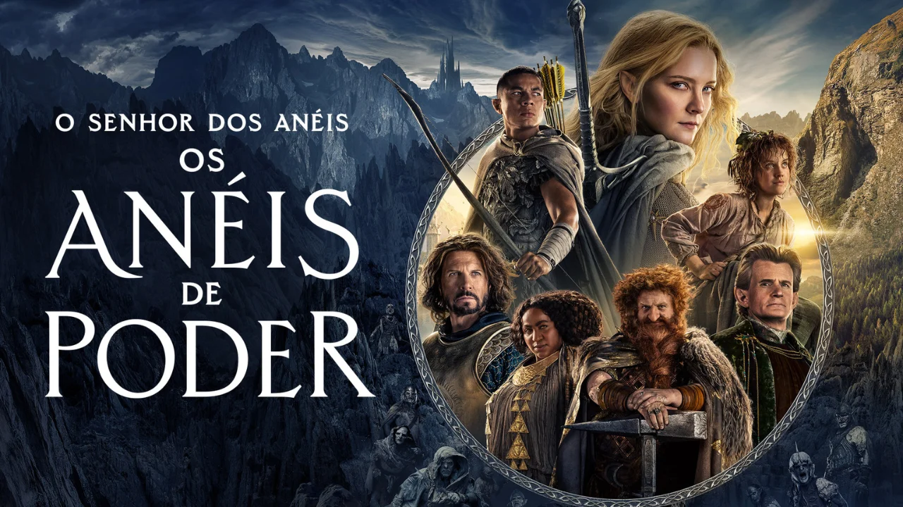
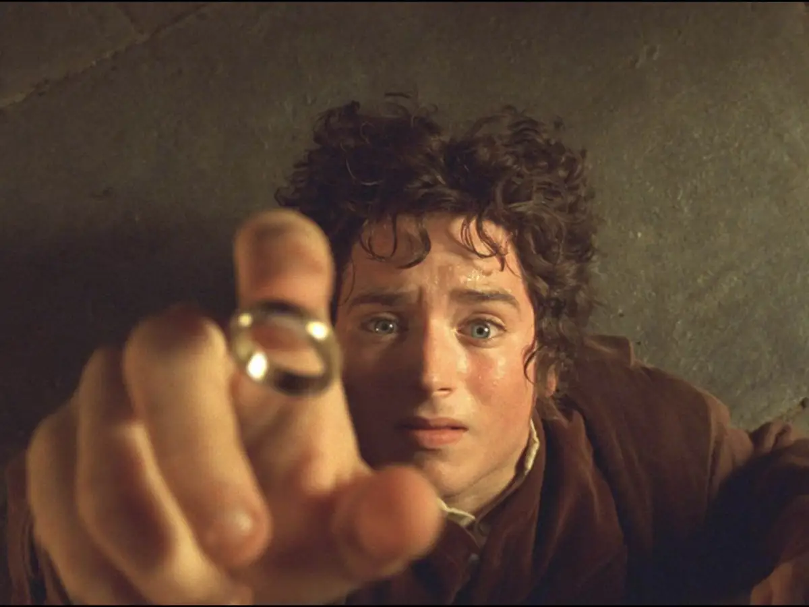

Senhor dos Anéis
Premissa Geral
O Senhor Sombrio Sauron forjou o Um Anel para dominar todos os outros anéis de poder e escravizar a Terra-média.
Quando o anel é perdido, a busca de Sauron por ele reinicia.
O artefato acaba parando nas mãos do jovem hobbit Frodo Bolseiro, no pacífico Condado, após ser herdado de seu tio Bilbo.
Jornada
Com a orientação do mago Gandalf, Frodo descobre que a única maneira de salvar o mundo é levar o Anel até as fendas da
Montanha da Perdição (em Mordor), onde ele foi criado, e destruí-lo no fogo.
Para ajudá-lo nessa missão quase impossível, é formada a Sociedade do Anel, composta por 9 integrantes:
- Hobbits: Frodo, Sam, Merry e Pippin.
- Homens: Aragorn e Boromir.
- Elfos: Legolas.
- Anões: Gimli.
- Magos: Gandalf.
Ao longo da saga, o grupo enfrenta exércitos de orques, traições, as tentações corruptoras do próprio Anel e acaba se dividindo,
enquanto os povos livres da Terra-média (Homens, Elfos, Anões, Hobbits e Ents) se unem na Guerra do Anel

